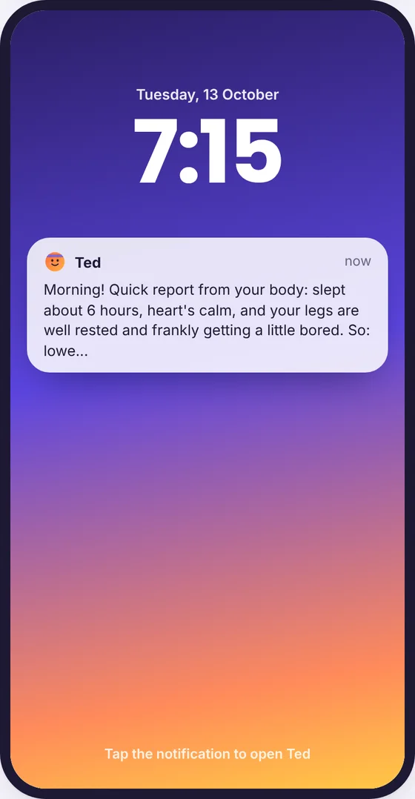
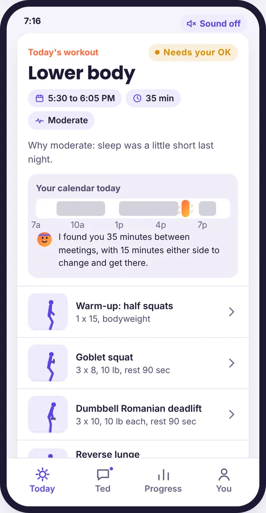
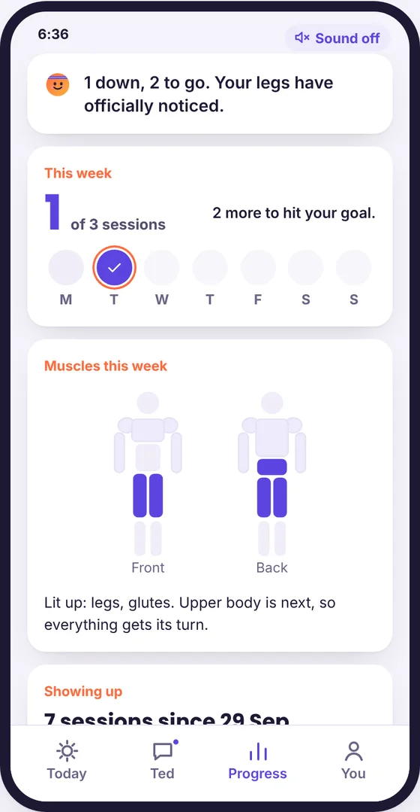
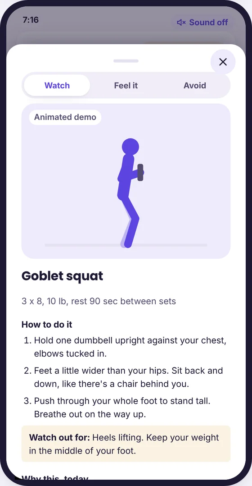
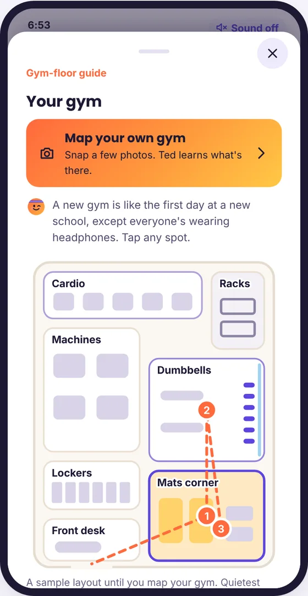
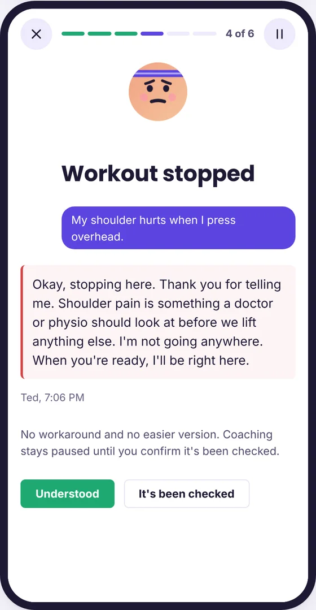

Ted, your personal gym coach
An AI strength coach for gym beginners. Ted reads your sleep, recovery, training history, and calendar every morning, plans one workout that fits your day, coaches you through it, and adapts, in a voice that believes in you before you do.
Runs in your browser with sample data. Tap "Play Maya's six weeks" for the guided story.





The problem
Plenty of people wear a fitness tracker and genuinely want to get stronger. Then they reach the weight room and freeze. Everyone there seems to know exactly what they're doing, and they don't know where to start.
The gap isn't data or motivation. Every morning they face the same questions alone: should I train today, what should I do, and when will it fit? Without answers, most days end in skipping, and most people quit around week six, when nothing adapts and nobody notices.
Who it's for
Beginners to strength training who already track their sleep and steps, often with a demanding desk job and a packed calendar. Ted is for anyone, but it's designed to speak especially to women new to lifting, who are the most likely to feel they don't belong in the weight room.
How Ted works
- Ted checks in first. When last night's sleep data syncs, Ted reads her sleep, resting heart rate, HRV, training history, and today's calendar. She doesn't have to ask.
- Ted makes the call. Push, keep it moderate, active recovery, or rest, judged against her own normal rather than a generic one.
- Ted finds the time. A slot that fits between meetings, with buffer to change and get there.
- Ted builds one plan. From a reviewed exercise library only, checked for safety, privacy, and tone before she sees it, with a reason for every exercise.
- She decides. Approve, edit, or "not today." Nothing goes on her calendar, and no weight goes up, without her OK.
- Ted coaches the session. Demos, what to feel, mistakes to avoid, counting reps, and rest timers, with pause when life interrupts.
- Every session shapes the next. Her logged sets update her progression, reps first and then weight, so tomorrow's plan builds on today.
What makes Ted different
A coach who believes in you
Ted's voice is warm, funny, and never judges. The humor is always earned by her real data, and it disappears completely when something is serious.
"You've been lifting the 15s like they're grocery bags. Ready to try 20? Your call."

It teaches, not just tells
Every exercise has a demo, where she should feel it, the common mistakes to avoid, and how to set up the machine. Every plan explains why it's today's plan.

It knows her gym
A few photos become a map of her gym. Ted plans only with equipment she actually has, tells her the quietest times, and gives her the exact words to ask for help.

It knows its limits
If she reports pain, Ted stops coaching and points her to a doctor or physio, with no workaround. Ted never gives medical advice, never talks about weight loss or appearance, and the user always has the final say.

Proving it works
The most important fix: in early testing, a misbehaving AI response paused coaching after a pain report but still suggested a lighter exercise. A page-level safety check now holds back any workaround after pain, every time.
The success metric for a real pilot: at least two more strength sessions a week than each person's own 13-week baseline, with zero safety incidents.
How I'd launch it
- Me first, for two weeks, on my own live data.
- A 12-person pilot for eight weeks, with a clear go or no-go rule at the end.
- A 100-person beta, once Google approves the restricted health data access.
- Public launch, with monitoring, trainer review, and a kill switch throughout.
My role
I built Ted as my capstone for Maven's AI Product Management Certification, taking it from idea to working prototype: discovery and problem framing, the agent design and its guardrails, the voice, the prototype, and the evals. I built it with Claude as my collaborator.
The prototype is designed to connect to the Google Health API, which provides Fitbit data, and Google Calendar. It runs on sample data shaped exactly like those APIs.